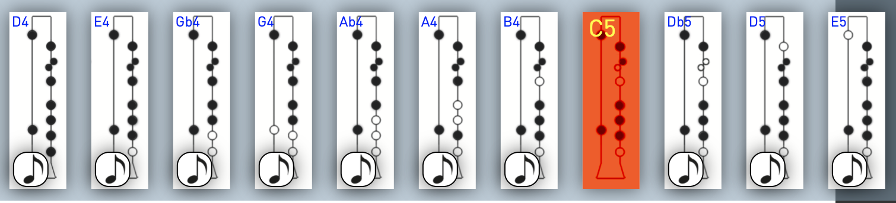
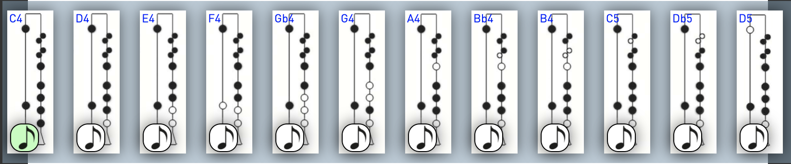

Key Mode Compatibility
The Bar Graph below provides insight on the compatibility of songs categorized by the "key mode" whether they be in Minor, Major or "modulating". Modulating is used for lack of better terms to describe songs which require playing both C and Db on the top middle finger scallop with the Db hole unplugged. Click the bars to view the songs in a filterable table. You can also view the complete dataset of compatible songs at the bottom of the page.
Compatibity Filter
Incompatible Notes
The Bar Graph below provides insight to incompatible songs categorized by the amount of distinct incomaptible notes. This means that songs in the first column only have one incompatible note while songs in the 14 column have 14 distinct incompatible notes. Songs which only have a few incompatible notes are likely to still be generally compatible on the chanter. The higher the amount of incompatible notes, the less likely the song will be playable on the chanter, modified or not. You can also view the complete dataset of incompatible songs at the bottom of the page.
Incompatibity Filter
Methodology
Data Source
FolkWiki.se, as the name suggests is a wiki with tunes on Swedish and Scandinavian folk music. The wiki is primarily intended for the abc format, but you can also upload songs in jpg and PDF formats. Although ABC may not be an ideal format to learn folk music (neither is sheet music for that matter), it has allowed me (the creator of FolkTabs.com) to programatically analyze the compatibility of songs on the limited range of the Sweidsh Bagpipe. This process if done manually would obviously take an exceedingly impractical amount of time.
Chanter Configuration
The most common chanter configuration for the Säckpipa is the e/A Chanter (image above). Depending on the maker there may be an additional hole on the bottom pinky scallop allowing one to play D and Db based on how the pinky is placed. As such, during the compatibility analysis this was also taken into consideration. An additional note that was also deemed compatible, although not conventionally available is the high F which is played by squeezing the bag on high E. All song listed as compatible take these additional 2 notes into consideration. Without these two the compatible dataset would be relatively smaller.
d/G chanter applicability
The difference between these two chanters is only with regard to the pitch, and likewise the name of the notes. Some d/G chanters have an additional hole on the top index finger scallop. This additional note was not taken into consideration during compatibility but analysis and filtering of the incompatible pitch provides little to no results for songs containing it. To understand why that is the case you can filter the complete dataset of incompatible notes with the following two steps: first filter the Incompatible Pitches by 75 (the MIDI pitch index corresponding to the note Eb), then sort the Incompatible Pitch Length in descedning order. You'll see that only songs containing 9 or more incompatibly distinct notes meet this criteria. In conclusion this dataset also applies to the d/G chanter but when taking into consideration the actual note names and/or MIDI pitch indexes, you'll need to transpose the chanter down.
Other Chanter Configurations
While the source was FolkWiki and the chanter the ABC files were compared against is the Säckpipa, the code used to run the analysis can also be modified with a different chanter configuration. This means that the code can be used to run an analysis of any instrument (let alone different chanter configurations) as well as different data sources. While the code at the moment is not seamlessely configurable to achieve this, modification of the code is possible.
Algorithm Explained
The process in which ideal transposition is determined is based on the following steps. First, the range of the song is caluclated. This is the difference of the lowest and highest pitch of the song. Next, the range is compared to that of the e/A chanter. If the songs range is lesser than or equal to that of the chanter, the song becomes a candidate for transposition. Next, the song is transposed up/down and compatibility is determined. If it's found to be compatible after transposing (n) steps, the song will be categorized as "compatible after transposition". If the song has no compatible transposition candidate then the amount of incompatible notes are recorded.
The next step is that there are duplicate records based on which "Key Mode" (Major, Minor or Modulating) the song was analyzed against. This is why some songs may not be compatible after transposing in one key, but will be in another. For this reason the song and each key mode anaylsis must record whether or not the song is exclusively incompatible. Only songs that are exclusivley incompatible based on the Key Mode make it to the Incompatible dataset. It's also worth noting that very few songs were within range but incomaptible. The code is available to review and/or use in the Github Repo.
What Next?
As explained, the Data Source used was FolkWiki.se for this particular dataset. There are however other respositories of ABC files that can also be analyzed against. If anyone is aware of other ABC repositories feel free to contact me. Likewise as there may be errors or furthers improvements in how the dataset is analyzed feel free to open up an issue on the Github Repo..
Complete Datasets
Compatible Songs
This is the complete comprehensive list of compatible songs. Unlike the tables above which provide granularity based on the key or incompatible note count, this table allows you to filter the enitre data set by the column headers.
Incompatible Songs
This is the complete comprehensive list of incompatible songs. Unlike the table above which provide granularity based on the note count, this table allows you to filter the enitre data set by the column headers.